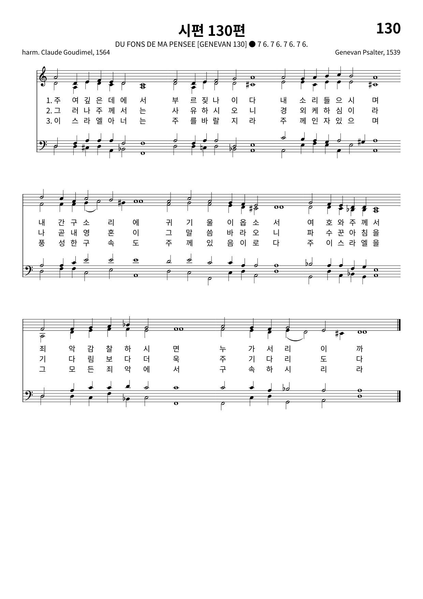

Psalm 130
DU FONS DE MA PENSEE [GENEVAN 130] · 7 6. 7 6. 7 6. 7 6.
English title: Out of the Depths of Sadness
Tune: Genevan Psalter, 1539 · Harmony: Claude Goudimel, 1564 · Lyrics: Korean adaptation of Psalm 130 from the Korean Revised Version (AI draft adaptation · not yet theologically reviewed) · 3 stanzas
Score PDF MusicXML (for printing) MusicXML (for accompaniment, with prelude and repeats) Read Psalm 130 (Korean Revised Version)
Score
← Psalm 129 ListAccompaniment (in preparation)Psalm 131 →
Lyrics (Korean)
Stanza 1
주여 깊은 데에서
부르짖나이다
내 소리 들으시며
내 간구 소리에
귀 기울이옵소서
여호와 주께서
죄악 감찰하시면
누가 서리이까
주여 깊은 데에서
부르짖나이다
내 소리 들으시며
내 간구 소리에
귀 기울이옵소서
여호와 주께서
죄악 감찰하시면
누가 서리이까
Stanza 2
그러나 주께서는
사유하시오니
경외케 하심이라
나 곧 내 영혼이
그 말씀 바라오니
파수꾼 아침을
기다림보다 더욱
주 기다리도다
그러나 주께서는
사유하시오니
경외케 하심이라
나 곧 내 영혼이
그 말씀 바라오니
파수꾼 아침을
기다림보다 더욱
주 기다리도다
Stanza 3
이스라엘아 너는
주를 바랄지라
주께 인자 있으며
풍성한 구속도
주께 있음이로다
주 이스라엘을
그 모든 죄악에서
구속하시리라
이스라엘아 너는
주를 바랄지라
주께 인자 있으며
풍성한 구속도
주께 있음이로다
주 이스라엘을
그 모든 죄악에서
구속하시리라